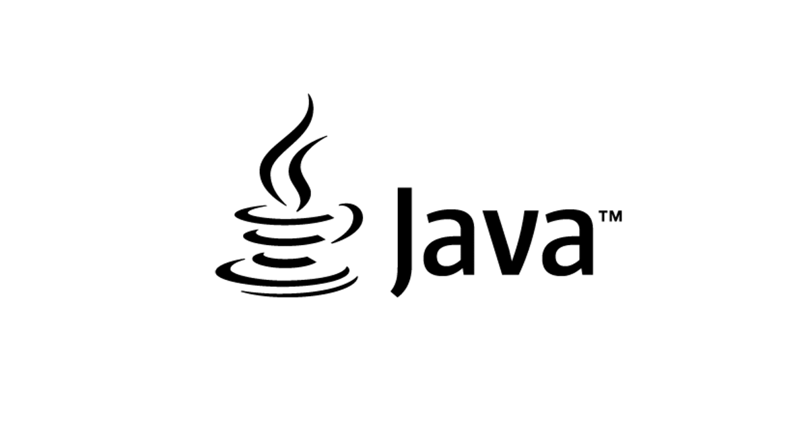

Python é uma linguagem de programação de alto nível, ou seja, com sintaxe mais simplificada e próxima da linguagem humana, utilizada nas mais diversas aplicações, como desktop, web, servidores e ciência de dados.

linguagem java
Se você já utilizou um internet banking, provavelmente deve ter visto um aviso para instalar ou atualizar o Java. A tecnologia é uma das mais utilizadas do mundo, e engloba tanto uma plataforma de software quanto uma linguagem de programação.
linguagem C#
O C# é uma linguagem de programação muito popular, sendo uma excelente escolha devido a sua baixa curva de aprendizado e simplicidade (mas sem deixar de ser uma linguagem poderosa). Além disso, ela é a linguagem principal do .NET Framework, o framework para desenvolvimento da Microsoft.
linguagem R
O que é Linguagem R ? É uma linguagem e ambiente para computação estatística e gráficos. É um projeto GNU que é semelhante ao idioma e ao ambiente S desenvolvido na Bell Laboratories (anteriormente AT&T, agora Lucent Technologies) por John Chambers e colegas. R pode ser considerado uma implementação diferente de S.